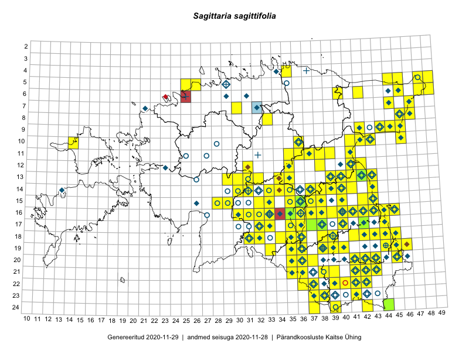

Sagittaria sagittifolia
Uuendatud: 2016-12-02
Kaardile koondatud taksonid: Sagittaria sagittifolia L.

Kaart põhineb 126 vaatlusel. Taksonit on leitud 93 ruudust.
Kuvatud viited 20 esimesele andmebaasikirjele, ülejäänud PlutoFis
- Malle Leht: 2015-07-09: : ala
- Toomas Kukk, Peedu Saar: 2014-09-23: 06-42: ala
- Ott Luuk, Peedu Saar: 2015-07-27: 11-35: ala
- Peedu Saar: 2015-07-04: 18-45: ala
- Peedu Saar: 2015-07-04: 18-44: ala
- Peedu Saar: 2015-07-14: 15-38: ala
- Tiit Hallikma, Toomas Kukk: 2015-07-22: 05-49: ala
- Toomas Kukk, Eerik Leibak: 2015-07-29: 16-45: ala
- Toomas Kukk, Eerik Leibak: 2015-07-29: 16-44: ala
- Peedu Saar, Liina Oja: 2015-07-24: 09-45: ala
- Peedu Saar: 2015-08-10: 13-40: ala
- Peedu Saar: 2015-08-11: 13-41: ala
- Katrit Karus, Tõnu Feldmann: 2015-07-27: 20-45: ala
- Tõnu Feldmann, Katrit Karus: 2015-07-28: 20-41: ala
- Peedu Saar, Eerik Leibak: 2015-08-18: 11-38: ala
- Peedu Saar: 2015-08-22: 11-41: ala
- Tõnu Feldmann, Katrit Karus: 2015-07-27: 19-45: ala
- Katrit Karus, Tõnu Feldmann: 2015-07-27: 19-45: ala
- Katrit Karus, Tõnu Feldmann: 2015-07-27: 19-33: ala
- Tõnu Feldmann, Katrit Karus: 2015-07-31: 16-33: ala